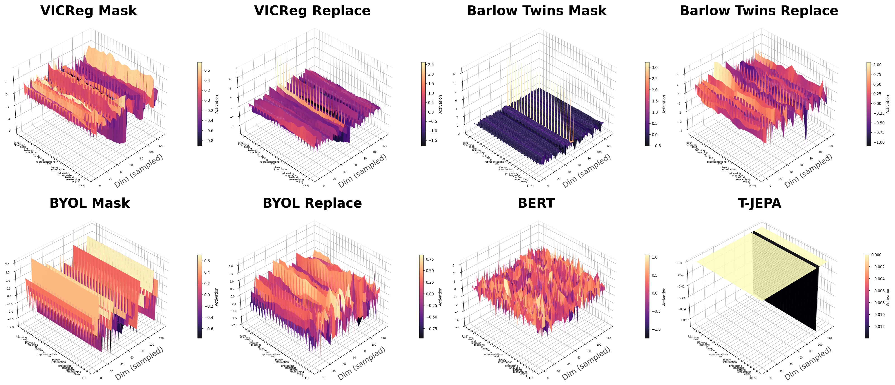
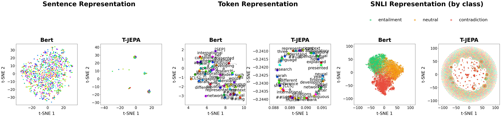

Joint-Embedding Predictive Architectures — JEPA for short — have quietly become one of self-supervised learning's best tricks. Instead of asking a model to reconstruct the exact pixels behind a mask, JEPA only asks it to predict what the masked region represents, in an abstract latent space. That one change has powered strong results in images (I-JEPA), video, and audio. What it has conspicuously not powered is a standard, general-purpose recipe for text encoders. Two very recent 2026 papers, LLM-JEPA and DLLM-JEPA, do attach a JEPA-style loss to language models — but in both, the JEPA term never trains alone; it rides on top of an ordinary generative loss (autoregressive or diffusion), and the ablations in both papers show that term collapsing to nothing the moment it is left by itself. So the actual question — can deterministic latent prediction work on text on its own — was still unanswered. We decided to just build the missing baseline and watch, in detail, what happens when it fails.
A JEPA model is simple in outline. A context encoder sees a masked view of the input; a slowly-updated (EMA) target encoder embeds the full, unmasked input; a predictor is trained to match the target's latent representation from the context alone, using ordinary squared error. No pixels or tokens are ever reconstructed — only representations. This works beautifully for images because nearby patches are strongly correlated: a masked patch of fur is well constrained by the fur around it, so there is usually one geometrically sensible answer to predict.
We call this requirement conditional concentration: given a context zC and a target position pj, the target's representation zT(j) should sit near one meaningful point rather than being spread across several. We formalize this into three necessary conditions — predictability, non-collapse, and low conditional variance — and prove each one with a short argument. Here is the core math, briefly.
The target is conditionally concentrated when its conditional entropy given the context is small relative to its unconditional uncertainty. Since deterministic encoders cannot manufacture information absent from the raw inputs, the Data Processing Inequality gives a ceiling on what any JEPA loss can exploit:
I(zC; zT(j)) ≤ I(xC; x(j))The image–text gap can't be closed by a bigger encoder — it depends on how strongly the visible context actually constrains the missing target.
Images. Under a locally Lipschitz target encoder, nearby patches pin each other down:
E[ ‖fθ̄(x)(j) − fθ̄(x)(i)‖² ] ≤ L² d(i,j)²Proof sketch: bounded local pixel variation + Lipschitz continuity of the encoder on the data manifold, squared and averaged.
Text. If two plausible completions u, v of a masked span both have probability above ε and their representations differ by at least Δ, the conditional target is a two-(or more)-point distribution, not a point mass:
‖fθ̄(xj←u)(j) − fθ̄(xj←v)(j)‖ ≥ Δ ⇒ Var(zT(j) | zC, pj) > 0Proof sketch: a random variable placing non-negligible mass on two separated points cannot be concentrated at either one.
Consequence I. Predictability fails first, before anything else — exactly what we see empirically: T-JEPA's mutual-information proxy plateaus almost immediately, while its representation rank is still healthy; collapse only follows, thousands of steps later.
A representation is non-collapsed when its covariance Σz has no vanishing direction:
Var(u⊤z) ≥ γ for every unit u ⇒ λmin(Σz) ≥ γImages. If the context encoder collapses to a constant c, the predictor is left guessing position alone, and pays for it — real visual targets vary with content beyond position (σ²vis > 0):
infgφ E[ ‖gφ(c, pj) − zT(j)‖² ] ≥ σ²visText. If the encoder instead factors through K < d coarse equivalence classes, its covariance is provably rank-deficient — rank(Σz) ≤ K − 1 — yet a predictor built on those same K classes can still reach zero training loss. Collapsing costs nothing under the loss itself.
Consequence II. For images, collapse is expensive; for text, it's a free, loss-reducing escape route — which is exactly why T-JEPA's effective rank eventually implodes while I-JEPA's keeps growing.
The JEPA loss always splits into a reducible and an irreducible part:
E[‖gφ − z*‖²] = E[‖gφ − z̄‖²]reducible + E[Var(z* | zC, pj)]irreducibleand the squared-error-optimal predictor is exactly the conditional mean — a probability-weighted centroid over every plausible completion:
g⋆φ(zC, pj) = Σv p(v | xC) · hj(v; xC)When m ≥ 2 completions each carry probability ≥ α and are pairwise separated by ≥ Δ, that irreducible term is bounded away from zero:
Var(z* | zC, pj) ≥ (α² m(m−1) / 2) · Δ²Proof sketch: Var(Z) = ½E[‖Z − Z′‖²] for an i.i.d. copy Z′; restrict the sum to separated, non-negligible-probability pairs.
Consequence III. Whenever plausible completions are both likely and separated, the "best" deterministic vector is a centroid that matches no real completion — predictable and coherent pull in opposite directions for text in a way they don't for images.
To test this, we built T-JEPA, a direct text analogue of I-JEPA trained under a matched recipe — same optimizer schedule, same EMA target encoder, same span-masking budget — and tracked five complementary diagnostics on held-out data: an InfoNCE mutual-information proxy, the effective rank of the representation covariance, pairwise cosine similarity, the train–validation loss gap, and a directly estimated conditional target variance (sampled from sixteen plausible completions per context). All five converge on the same five-stage story, reproduced across five independent seeds: the mutual-information proxy saturates almost immediately, conditional variance stays stubbornly elevated, training and validation loss diverge, effective rank then collapses, and downstream transfer craters. I-JEPA, trained side by side under identical settings, shows none of it — its mutual information keeps climbing and its representation rank stays healthy throughout.


The downstream numbers make the point plainly. Frozen and evaluated on classification and retrieval, BERT — trained with ordinary masked language modeling — comfortably outperforms every self-supervised baseline we tried. T-JEPA lands at chance-level classification and zero retrieval, below even non-contrastive baselines like Barlow Twins and VICReg trained under the same corruption budget. None of this means predictive latent learning is impossible for language; it means the missing inductive bias is preserving multiple plausible completions rather than compressing them into a single point.
Khang and I just finished this preprint together: "The JEPA Paradox in Language: The Geometry of Linguistic Alternatives." There is a way of learning in AI I have always found appealing: mask part of the input, and ask the model to predict the missing piece — not by guessing raw pixels or raw words, but by predicting an internal representation of what is missing. That recipe had already worked beautifully for images, video, and audio, so we assumed carrying it over to language would go just as smoothly.
It did not. After many rounds of changing the masking scheme, the architecture, and the training setup, the same pattern kept showing up: the loss kept going down, the model kept "learning" in that narrow sense, but what it represented internally quietly collapsed into something close to uniform and useless. At first we assumed a bug, or the wrong hyperparameters. After a long stretch with no real progress, we ended up asking a different, slightly backwards question: why does a recipe that works so well for images run into trouble on language specifically?
The picture that eventually made sense of it is simple. Mask a small patch inside a photo of a cat, and the fur around it already tells you most of what belongs there. But mask a word in "The cat ___ on the mat," and the blank could be "sat," "lay," "slept," "rested," and more — not one answer, but several, each carrying different meaning. The model is not just missing information; it is facing several equally valid possibilities at once. That uncertainty is entirely natural in language. An ordinary language model can hold onto it by spreading probability across candidate words. Ours could not — it was forced to compress everything into one single answer.
That tension is what we spent this paper trying to understand. Rather than propose yet another new model, we followed the failure itself: tracking how it unfolds step by step, comparing images and text side by side under matched conditions, and repeating the experiment across independent runs to make sure it wasn't a fluke. This paper is the result of a fairly long stretch of trial and error, and one of the rare times we chose not to look away from a negative result, but to sit with it long enough to understand why it happened.
Thank you, Khang, for staying with this question all the way to the end.